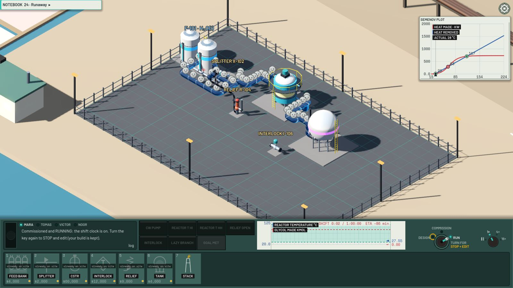
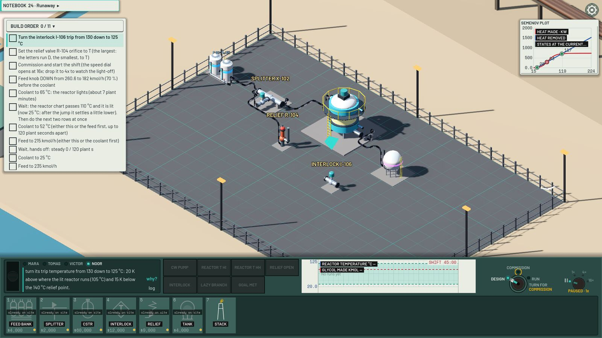

What it teaches. Relief, interlocks, runaway and the safety case. You find the point where a reactor runs away and what stops it.
4 jobs: L24 to L27. Site: Containment yard. All of its jobs are drawn in the new look: a 3D hall and lab.

Classic look. L24 Runaway: the Semenov plot while the plant runs

Classic look. L24: the start-up checklist ticks from the plant itself
L24 Runaway New look
Propylene glycol reactor, unit 3
Brief
Propylene glycol reactor. It has two personalities: lazy at about 27 °C and productive at about 105 °C. Between them is a cliff. Goal: make the glycol and never lose the vessel. Start it up by the checklist on the build page; each row ticks from the plant itself (tap a knob's number to type it, then Enter).
Why the recipe looks like this. Heat made climbs steeply with temperature, heat removed climbs in a straight line: they cross at the lazy state, an unstable middle and the productive state. A full charge lit at once overshoots to 160 °C, so it is lit starved, 70 % of the 260.6 kmol/h charge (its own ignition point is 61.4 °C, so 65 °C coolant lights it), then the coolant and the feed come down and up in small steps whose in-between states are all safe. The trip (125 °C, down from 130) sits 20 K above the lit 105 °C and 15 K under the 140 °C relief, so a cut feed comes before a lifted valve. The game triples the textbook heat of reaction (251 vs 84 kJ/mol) to make the cliff visible in one shift.
If the interlock trips: let the chart fall below 125 °C, press Reset on the interlock card, and start again from the feed row. The two flow readings differ for about a minute after each change (72 s of hold-up): a transient, not a fault. The whole shift fits about five minutes at 16x on a machine that keeps up; allow longer when it does not. Call it: predict before your first commission. The answer box locks when you commission; the printout marks your call right or wrong.
Goal
Make at least 3.5 kmol of propylene glycol delivered to the tank (the shift is 2700 plant seconds: 45 minutes, about five minutes of your time at 16x; the level is won when it ends with every goal met)
Keep the vessel below 160 °C: no loss of containment
Stars
Goal met: the glycol made and the vessel never lost
The relief valve never lifted
The Chief Engineer line: at least 6.6 kmol of glycol with a 15 K margin below the relief point (light it sooner and reach full feed earlier)
If it fails
The printout names one of these when a goal is missed:
The reactor never lit.
The vessel was lost.
The relief lifted.
Not enough glycol.
Coach steps (hints that show how to build)
Turn the key to commission, then start the shift.the plant settles on the lazy branch at 25 °C coolant; that is a stable place, not a failure.
Start the shift. The clock drops to 1x while an alarm is open.a runaway gains 20 K in under a minute; you cannot plan through it.
L25 The Last 0.3 Percent New look
Contact plant, acid unit
Brief
The regulator has cut the limit on SO₂ in the stack, per tonne of acid. Ninety-eight percent conversion will not do.
Burner gas arrives at 420 °C. Build the converter, take the acid out in 98 percent acid, and read the stack.
Why four beds and two absorbers. Each bed heats the gas toward its own equilibrium and stops; the cooler pulls it back to 420 °C so it can convert again (the X-T staircase). Three beds stall near 98 %. Taking the SO₃ out in the first absorber, then reheating for a fourth bed, lets the equilibrium run forward again past 99.7 %. Absorb in 98 % acid, never water: water makes an acid mist that goes up the stack. The checklist on the build page has every part, pipe and setting in order. Call it: predict before your first commission. The answer box locks when you commission; the printout marks your call right or wrong.
Goal
Stack SO₂ at most 2 kg per tonne of acid
SO₃ absorbed in 98 % acid (not in water)
Stars
Goal met: under the limit with acid absorbers
Under the strict limit (EU best-available band for existing plants)
Strict limit met at the Chief Engineer cost per tonne
If it fails
The printout names one of these when a goal is missed:
Over the budget.
Water is making acid mist.
One contact is not enough.
The beds are not converting enough.
Coach steps (hints that show how to build)
Place four catalyst beds with a cooler between the first three, an absorber after the third and a second one after the fourth.the reaction heats the gas toward its equilibrium; a cooler pulls it back so it can go on converting.
Click a bed, then on its card choose the V₂O₅ vanadium catalyst in the catalyst selector and set the catalyst mass. Do this for every bed.the bed is only as fast as its catalyst: no catalyst, no rate.
Take the SO₃ out after the third bed, reheat, and add a fourth bed and a final absorber.removing the product pulls the equilibrium forward, so the last bed can convert what is left.
Pipe it: beds, coolers and absorbers in order, acid to the tanks, last gas to the stack.every outlet ends in a unit, a tank or the stack.
Commission and read the stack.the limit is per tonne of acid made, not per hour.
Read kilograms of SO₂ an hour on the stack and the acid made.their quotient is the number the regulator reads.
L26 Inside the Envelope New look
Nitric acid line, gauze deck
Brief
Ammonia burns in air between fifteen and twenty-eight percent (at room temperature). We run at ten. Run the gauze hot enough for NO, and keep the N₂O down.
Place the gauze burner and the N₂O abater, set the air flow and the air preheat. Hotter air widens the flammable range: the mixture must stay outside it at its own temperature.
Why these numbers (the checklist on the build page has them in order: air 630 kmol/h, preheat 200 °C, abater 95 %). 70 kmol/h of ammonia in 700 kmol/h of mix is 10 %. At the 178 °C the feed really has at the gauze (the cold ammonia cools the 200 °C air) the lower flammable limit of NH₃ in air is 14.6 mol % (upper 31.2 %), so 10 % sits 4.6 points under it; hotter air lowers the limit, and the 11 % design rule is a margin under it. The gauze exit temperature is the number you called: read it after commissioning, then move the air or the preheat and watch it. Call it: predict before your first commission. The answer box locks when you commission; the printout marks your call right or wrong.
Goal
NO yield at the gauze at least 95 %
Ammonia in the gauze feed at most 11 mol % (of the whole gas, not by mass)
N₂O at most 2.5 kg per t of HNO₃
HNO₃ to the tank at least 3.8 t/h
Stars
NO yield 95 % or better, at most 11 % NH₃, N₂O at most 2.5 kg/t and 3.8 t/h of HNO₃
N₂O inside the BAT band (at most the pack's upper limit, kg per t)
Cost per tonne at or under the calibrated best: 65.75 USD per tonne
If it fails
The printout names one of these when a goal is missed:
The gauze is cold.
Inside the envelope: it ignited.
Too much N₂O.
Too much ammonia.
Not enough acid yet.
Coach steps (hints that show how to build)
Call it first: the temperature of the gauze exit for your mixture.every percent of ammonia burnt to NO heats the gas by about 70 K; the gauze runs on its own heat.
Place the gauze burner between the mixer and the waste-heat boiler.the platinum gauze burns ammonia to NO in a thousandth of a second; the heat is the whole process.
Pipe the mixer into the gauze and the gauze into the boiler.the boiler takes the heat out before the gas is cooled to oxidise NO.
Set the gauze air to about 630 kmol/h for 10 % ammonia, then choose the air preheat.the gauze needs 850 °C or better to make NO, and the air preheat plus the ammonia fraction decide that; too much of either is a fire.
Place the N₂O abater after the gauze, pipe it into the line and set how much N₂O it should destroy.N₂O is a greenhouse gas 273 times stronger than CO₂ and the gauze makes it as a by-product.
Commission and read the gauze.the exit temperature and the yield come from the same energy balance.
Compare the gauze exit with the band for this pressure, then the ammonia fraction with the flammable limit.below the band the gauze makes nitrogen and N₂O instead of NO.
Ask Why? and see how much N₂O the abater takes out.the abater cannot make up for a cold gauze, only for the share that was made.
L27 Blocked Outlet New look
Gas drum D-102
Brief
If the outlet valve on that drum ever sticks shut, the gas keeps coming. Size the relief.
The drum runs at 25 bar(g) and is built for 30 bar(g). Its card reads absolute pressure: 26.0 bar there is 25 bar(g). Twenty tonnes an hour of methane is the load. The allowed peak is 110 % of the set pressure on the gauge scale: 33.0 bar(g) for a 30 bar(g) set, which is 34.0 bar(a) on the card. Call it: predict before your first commission. The answer box locks when you commission; a right call earns a star.
Goal
Relief capacity at least 20 t/h of gas
Set pressure at most the 30 bar(g) design pressure; peak pressure at most 110 % of set on the gauge scale, 33.0 bar(g) (API 520 accumulation is 10 % of the gauge set pressure; that is 34.0 bar(a) on the card)
Stars
Goal met: the valve passes the load and is set inside the vessel rating
The smallest API 526 letter that works
Call it: the required orifice area, within 3 %
If it fails
The printout names one of these when a goal is missed:
The set pressure is wrong.
The valve is too small.
Coach steps (hints that show how to build)
Place a relief valve beside the drum.nothing else will protect the drum when its outlet is shut.
The drum vapour leaves through the splitter: pipe the splitter's purge port (the relief leg) to the relief valve inlet.a relief valve only sees what its inlet sees, and the drum's vapour outlet is already piped to the splitter.
Set the pressure at which it lifts: the design pressure of the drum.set higher and the drum is over its rating; set low and it pops in normal running.
Pick an orifice letter and commission.the printout shows what that orifice can pass against what comes in.
Read the capacity against the load, then try the next letter down.a larger valve than needed costs money and chatters.